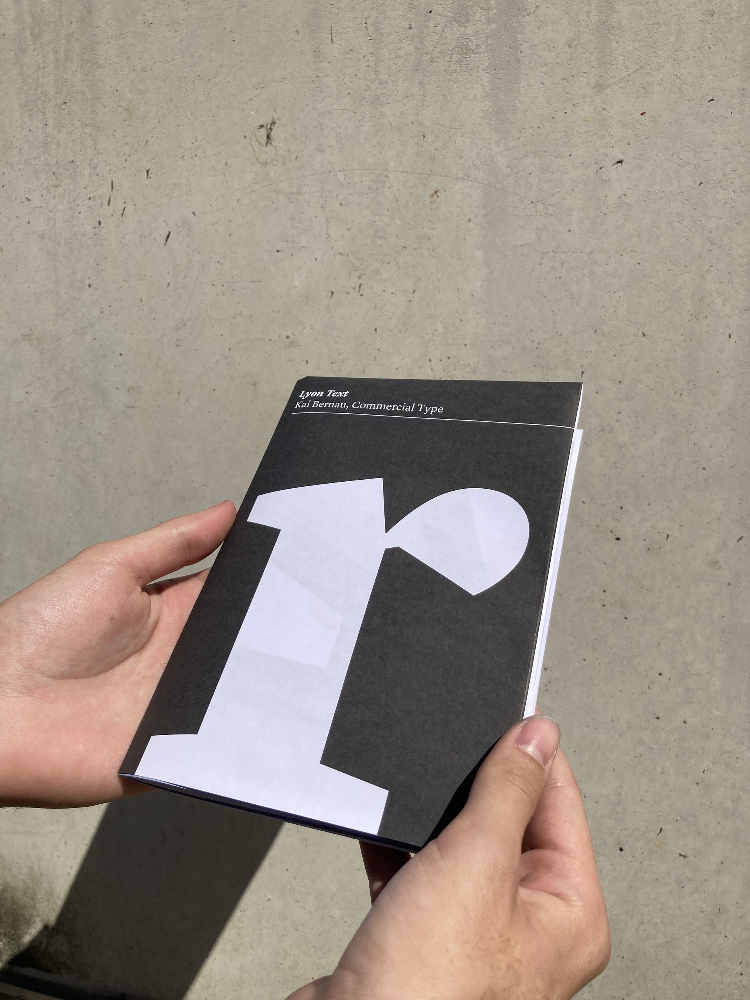
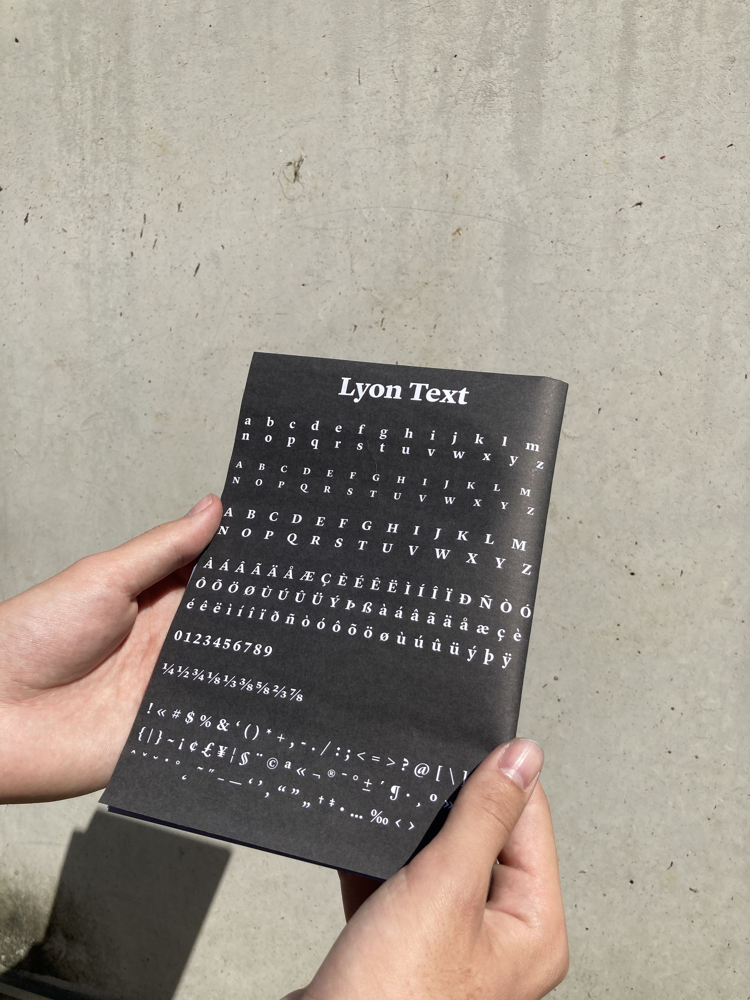
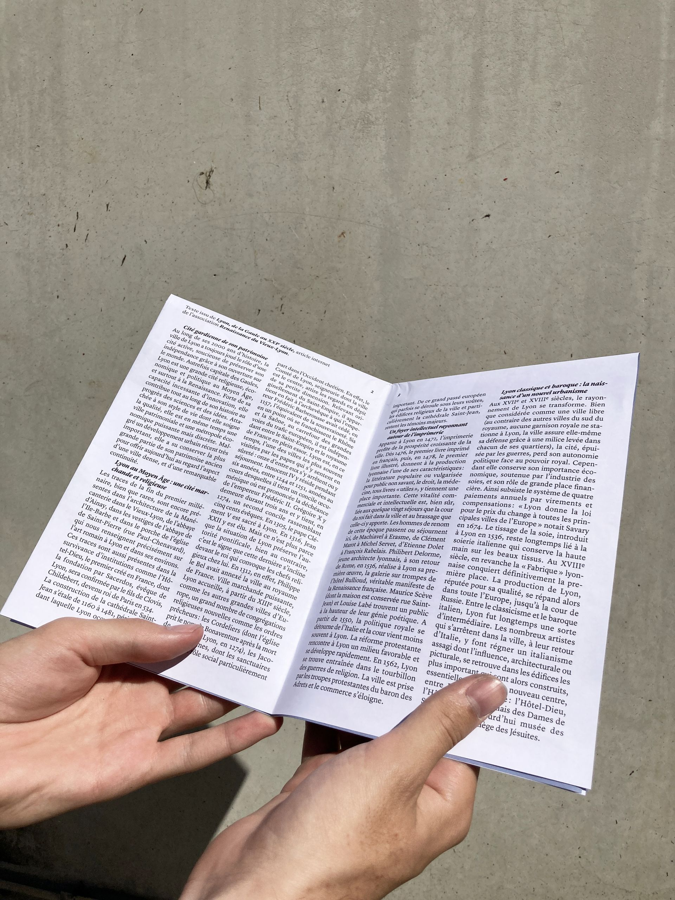
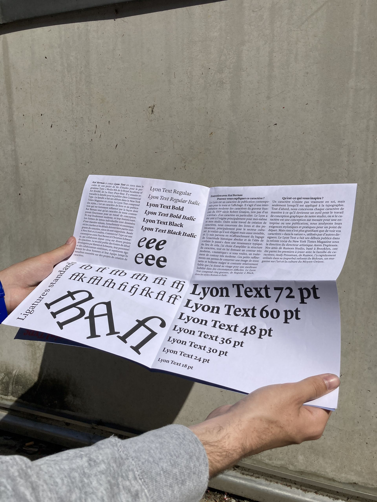
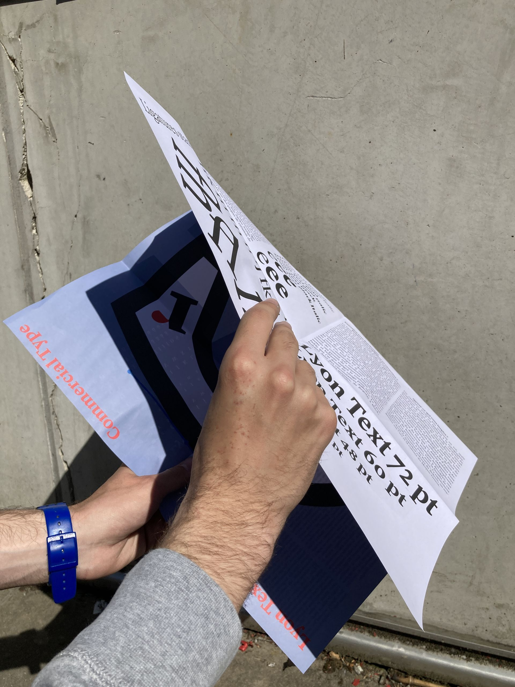
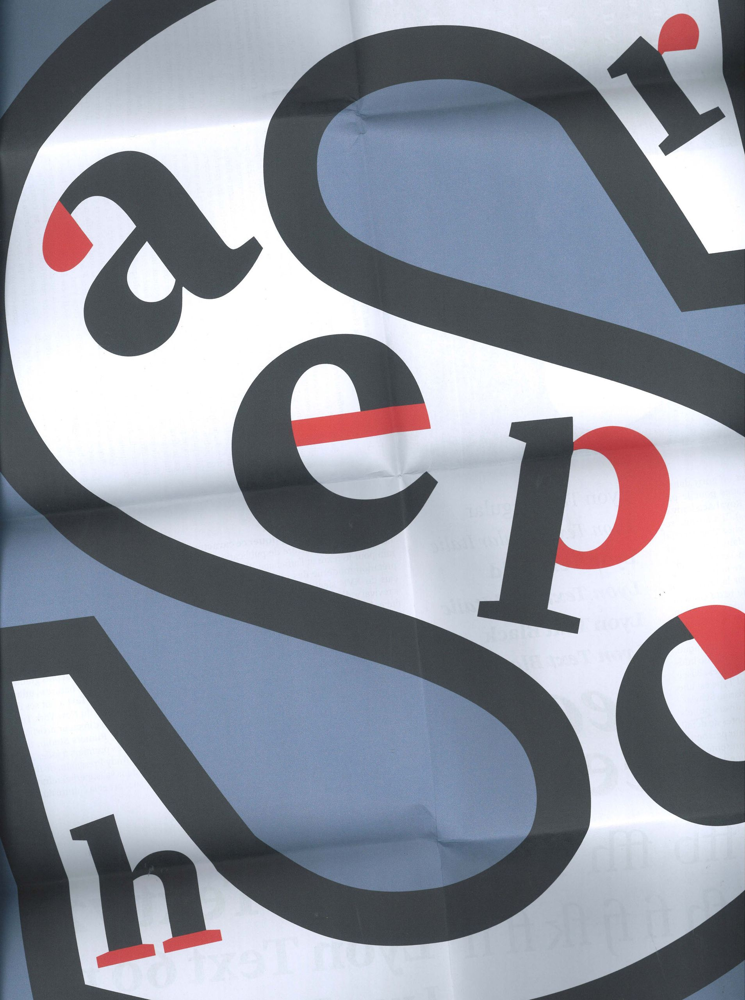
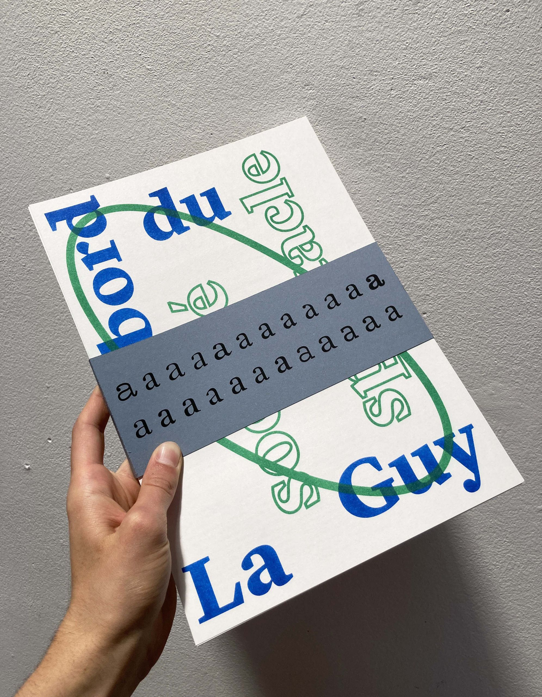
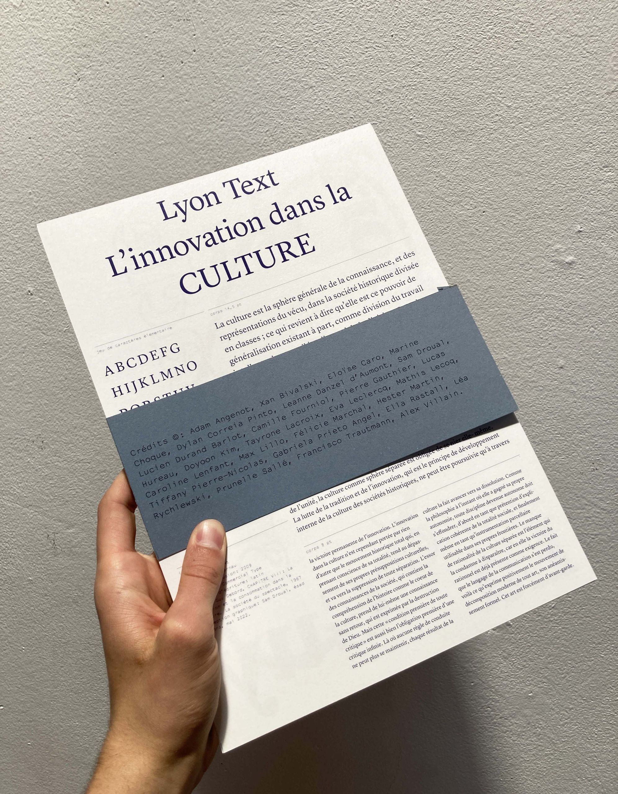

Avoir plusieurs formats à exploiter dans un même format.Ici, le dépliant permet de montrer Lyon Text sous plusieurs formes. D’abord une mise en page qui pourrait être celle de livres ou magazines, composée avec un texte à propos de l’évolution de la ville de Lyon, ensuite une double page qui parle des aspects techniques de la font et qui présente un court extrait d’interview du designer Kai Bernau. Enfin, au verso, le poster joue sur le contour très moderne et numérique avec un dessin de lettre assez sec de la font. Impression : jet d'encre, format : A5, A4, A3, A2.
En complément de ce spécimen, un dossier de fiches techniques collectif a été réalisé et imprimé en risographie deux couleurs, format A4. Design du bandeau : Sam Droual.
       